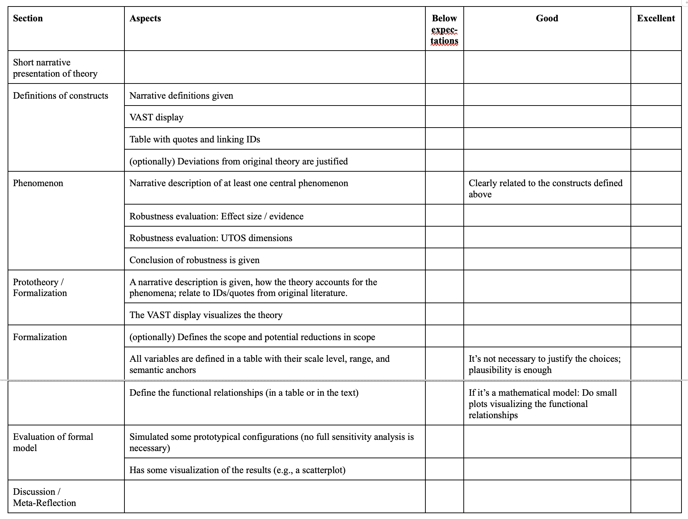

Formal modeling in psychology: Organizational Stuff
Formalia of the course (partly in German)
![]()
Goals
- Learn skills and tools that aid theory development
- Technical: Git, semantic versioning, make a theory pbject citeable…
- Conceptual:
- Visual Argument Structure Tool (VAST)
- Theory Construction Methodology (TCM)
- FAIR theories
- Practice theory formalization with multiple examples
- Understand the advantages and barriers of formal modeling
- High likelihood of “failure”!
- “Hacker space” for theory building: We all are learners.
Content
Three types of activities:
- Lectures: Gain knowledge
- Skills: Learn new tools
- Workshop: Apply tools and knowledge to a research question
All slides, homework instructions, etc. are on this website: https://nicebread.github.io/FOMO-Psy/
Note: Github (where the website is hosted) is using chaching. That means if I update the website, you will only see the updates if you actively reload it with Ctrl+R (Win/Linux) or Cmd-R (Mac).
All homework will be submitted to a private Git repo.
Formalia & Expectations
- 9 ECTS credit points
- ≙ 3 lectures with exam
- ≙ 12h expected time investment per week (in person course + homework)
- Do your weekly homework
- Participate actively in the course
- Write your final report
Hausarbeit
Aufbau
Da wir keine klassisch empirische Arbeit schreiben, sondern eine Theorie formalisieren, sieht der Aufbau der Hausarbeit etwas anders aus; z.B. so:
- Zielsetzung benennen: Eine bestehende psychologische Theorie zu formalisieren
- Kurze Vorstellung der gewählten Theorie
- Zentrale Konstrukte der Theorie (Text: Konstrukte auflisten; VAST: Konstrukte definieren)
- Identifizierung relevanter Phänomene
- Formulierung der (Proto-)Theorie und der Phänomene
- Aufstellen eines formalen Modells
- Evaluation des formalen Modells
- Diskussion: Meta-Reflexion
Mehr Details im Laufe des Seminars. Wir arbeiten bereits im Seminar auf ihre konkrete Hausarbeit hin.
Hausarbeit
Formalia
- Schriftgröße 12pt, Zeilenabstand 1.5x
- 15.000 Zeichen +/- 20% (Zählung inkl. Leerzeichen; ohne Deckblatt, Referenzen und Anhänge)
- Deckblatt: Titel, Datum, Name, Matrikel-Nr., Name der Veranstaltung
- Wenn Sie in
papaja/Rmarkdown/apaquartoschreiben:- das exportierte PDF von der Formatierung her gut so wie es ist (Sie brauchen nicht das Deckblatt, Zeilenabstand etc. anpassen).
- Schreiben Sie Datum, Matrikel-Nr. und Name der Veranstaltung in die Author Notes.
- Kein Inhaltsverzeichnis
- Mindestens 5 Publikationen zitieren
- Zitate & Literaturverzeichnis nach APA-Richtlinien (6. oder 7. Version)
Hausarbeit
Abgabe
- Als PDF-Datei per Email an den Dozenten – Empfang wird bestätigt
- Abgabetermin: Wird noch bekannt gegeben; typischerweise 3 Wochen vor Beginn des nächsten Semesters (also Mitte März im WS bzw. Mitte September im SS)
- Zwei Versionen einreichen:
- Vollständige Version (Dateiname: IhrNachname_Empra_Jahr.pdf) – z.B.: „Schmid_Empra_2024.pdf“
- Anonymisierte Version, bei welcher der Name auf dem Deckblatt gelöscht ist (Dateiname: Matrikelnummer_Empra_Jahr.pdf)
- Diese Version wird benotet.
- Dateiname z.B.:„98234034_Empra_2024.pdf“
- Sie können in
papajaeinfach eine anonyme Version erzeugen, indem Sie im YAML-Headermask: yesangeben (siehe Anleitung) - Sie können in
apaquartoeinfach eine anonyme Version erzeugen, indem Sie im YAML-Headermask: trueangeben (siehe Anleitung)
Hausarbeit
Benotung
- Wer anwesend ist, aktiv mitmacht und eine sinnvolle Hausarbeit abgibt bekommt eine (sehr) gute Note
- Es geht um:
- das Engagement
- die Auseinandersetzung mit den Tools und der Materie der Theoriebildung
- eine kritische Reflexion des Prozesses
- Wenn die Theorie, die man sich vorgenommen hat, einfach keine Formalisierung hergibt, dann ist das ein Problem der Theorie (und keine Fehlleistung auf Seite der Studierenden). In dem Fall …
- reflektieren, warum es nicht funktioniert hat
- was wäre notwendig gewesen, um weiterzukommen
- die gemachten Schritte und Hürden dokumentieren
Hausarbeit
Bewertungsschema (aktueller Entwurf)

Hausarbeit
Nutzung von KI-Tools (ChatGPT etc.)
- KI-Tools sind Realität und können in der wissenschaftlichen Arbeit unterstützend eingesetzt werden. Niels Van Quaquebeke hat eine schöne Übersicht.
- Es muss jedoch klar sein, was die Eigenleistung des/der Studierenden ist, und dass die Verantwortung für den Inhalt der Arbeit beim Autor bzw. der Autorin liegt.
- Am Ende der Hausarbeit müssen Sie entsprechend zwei Erklärungen anhängen:
- eine Eigenständigkeitserklärung (siehe nächste Folie)
- eine ergänzende Erklärung zur Nutzung von generativer KI und KI-gestützten Technologien im Schreibprozess (siehe übernächste Folie).
Hausarbeit
Eigenständigkeitserklärung
Hiermit erkläre ich, dass ich die vorliegende Arbeit selbstständig und ohne fremde Hilfe verfasst habe. Ich habe keine anderen als die angegebenen Quellen und Hilfsmittel benutzt und alle wörtlich oder sinngemäß übernommenen Stellen als solche kenntlich gemacht.
Ort, Datum, Unterschrift
Nutzung von KI-Tools: Selbsterklärung (deutsch)
Erklärung zur Nutzung von generativer KI und KI-gestützten Technologien im Schreibprozess
Bei der Erstellung dieser Arbeit habe ich folgende/s Tool/s verwendet: [NAME TOOL / DIENST]. Art der Nutzung [bitte ankreuzen]:
Nach der Nutzung dieses Tools bzw. Dienstes habe ich den Inhalt überprüft, nach Bedarf bearbeitet und ich übernehme die volle Verantwortung für den Inhalt dieser Arbeit. Ich bestätige, dass diese Arbeit keine längeren Passagen (z.B. Zusammenfassung/Abstract der Arbeit, ganze Absätze im Text) an rein KI-generiertem Text enthält.
Statement on the use of generative AI and AI-assisted technologies in the writing process
Statement on the use of generative AI and AI-assisted technologies in the writing process
In writing this paper, I have used the following tool/s: [NAME TOOL / SERVICE]. I used it for the following purpose/s:
After using this tool or service, I reviewed and edited the content as needed and I take full responsibility for the content of this paper. I certify that this paper does not contain lengthy passages (e.g. summary/abstract, or full paragraphs) of purely AI-generated text.
End
Contact
- @nicebread@scicomm.xyz
- ed.uml.ysp@tdorbneohcs.xilef
- https://www.nicebread.de
- https://github.com/nicebread